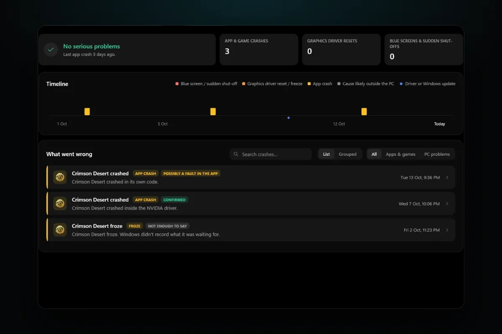

PC problems · Crashes
Why my display driver stopped responding and has recovered
"Display driver stopped responding and has recovered" means the graphics card took too long to answer and Windows reset its driver. How RigSight caught the resets on my own PC, what LiveKernelEvent 141 and nvlddmkm events mean, and how to fix it.

The short answer
Windows waits about two seconds for the graphics card. If it doesn't answer, Windows resets the driver and shows "display driver stopped responding and has recovered". Update or clean install the driver first, then set the GPU back to stock clocks and check its temperature and power. Several in a row can end in a blue screen.
The screen goes black for a second, the game freezes or closes, and a note in the corner says "display driver stopped responding and has recovered". You may not see the note at all, only the flicker. Either way, Windows just reset your graphics driver. It happened on my own PC more often than I knew, and finding out how often changed what RigSight reads.
How RigSight caught it
For months, RigSight's Crashes page counted zero graphics driver resets on my PC. It was reading the entry most answers tell you to look for, the Display event 4101 in Event Viewer. My PC had never written one. When I dug into Windows' error reports instead, the resets were there. Windows had filed a LiveKernelEvent 141 report, a graphics hang it recovered from, once on 13 July and six times on 30 July. On 22 August and 22 September the card hung and the PC went down with it, and the August one ended in a blue screen.
So from version 0.25.0, RigSight reads those hang reports as well as the Display event. The first time it runs, it goes back 90 days, so resets from before you installed it show up too. A hang that is followed within minutes by a sudden restart isn't counted as a reset. It goes on that shut-off instead, because the card took the whole PC down.
On 22 October I needed it. My NVIDIA driver reset five times in twenty minutes, between 5:13 and 5:33 PM, while I was running RigSight's tests. The NVIDIA kernel driver, nvlddmkm, logged each one as event 153, and Windows filed a LiveKernelEvent 141 report for two of them. I restarted the PC, and Windows has logged no resets since. Without the count, I would have remembered a couple of flickers and nothing more.
Graphics driver resets have their own tile on the Crashes page. Open one and it says "The GPU stopped answering and Windows reset its driver", marked Confirmed, because Windows itself recorded it. It names the driver file from Windows' report and the app that was in front. Under Still unknown it says why the GPU stopped answering, since that can be the driver, heat, power or the card itself. Windows records the reset, not the reason.
To help with the reason, RigSight shows the minutes around each reset. You get the last five minutes up close, a reading every 2 to 3 seconds, and the 45 minutes before with GPU temperature, hot spot, power and load. You can see whether the card was hot or pulling hard at that moment. With two or more resets, What they have in common says whether they all came in one game or across different apps. On the Games page, each game counts the resets during its plays. On the Timeline, a graphics driver update that brought clearly more resets than before can be marked as having made things worse. RigSight is free and open source.
Why the display driver stops responding
Windows has a safety net called Timeout Detection and Recovery, or TDR. When the graphics card takes on a task, Windows expects it done or paused within a time limit. Microsoft gives the default as two seconds. If the card misses it, Windows treats the card as frozen, resets the graphics driver, clears the graphics memory and redraws the desktop. That reset is the flicker you see.
Most of the time the desktop comes back fine. The game that was running often doesn't, because it lost its connection to the graphics card. Some games recover, some show a black screen, and many simply crash.
If resets pile up quickly, Windows stops trying. By default, once the card has hung and recovered five times within a minute, the next hang ends in a blue screen. A recovery that fails also ends in a blue screen, called VIDEO_TDR_FAILURE, stop code 0x116. It often names nvlddmkm.sys on NVIDIA cards or amdkmdag.sys on AMD cards.
The card misses the deadline for a handful of reasons. The driver can have a bug, or a new version can clash with a game. An overclock or undervolt that is almost stable makes the card stall under a certain load. A card that overheats slows itself down, and if that isn't enough it can hang. A power supply that dips for a moment when the card's power use jumps can stall it too. Less often, the card itself is failing.
Where Windows records the resets
Windows logs a reset in a few places, and the names are worth knowing, because forum answers use them all.
- In Event Viewer, under Windows Logs > System, a reset can be an entry from source Display with Event ID 4101, saying the display driver stopped responding and has recovered. As on my PC, it can also be missing.
- On NVIDIA cards, the System log also holds entries from source nvlddmkm. Event 153 usually reads as a TDR reset on the GPU. Event 13 is a graphics exception with an error code in its data.
- Reliability Monitor has them too. Search Start for reliability and open View reliability history. A reset shows as Hardware error, and its details say LiveKernelEvent with code 141 or 117. 141 means one graphics engine stopped answering. 117 means the whole card did. In both cases Windows recovered it.
Write down the times. Whether the resets happen in one game or in everything, at idle or only under load, tells you more than the error itself.
How to fix display driver stopped responding and has recovered
Try these in order. The first ones are the easiest to test.
- Update, roll back or clean install the graphics driver. The driver is the most common cause and the easiest to test. If the resets started right after a driver update, roll it back. Open Device Manager > Display adapters, right-click your card, and pick Properties > Driver > Roll Back Driver. If you have been on the same driver for months, update it. Either way, use the clean install option. On NVIDIA, pick Custom (Advanced) and tick Perform a clean installation. On AMD, use the installer's Factory Reset option, which removes earlier versions of AMD Software and means you can't roll back to them afterwards. The full steps, and when DDU is worth it, are in games crashing after a graphics driver update.
- Put the graphics card back to stock clocks. Reset MSI Afterburner or your card maker's tool to default and turn off any automatic tuning. Some cards ship with a factory overclock, and some have a switch for a quiet BIOS that runs lower clocks. Try it if yours has one.
- Check the GPU's temperature while you play, using a monitor that keeps a history. NVIDIA lists a maximum GPU temperature on the specification page for many of its cards, and it differs by model. The hot spot, which AMD calls junction temperature, normally runs well above the main GPU reading, so judge each against its own limit. If your card sits at its limit, clean the dust out, check the fans spin and give the case more airflow.
- Check the power. Make sure every power plug on the card is fully seated. If your card takes two or three power plugs, check the manuals for the card and the power supply. Some ask for a separate cable from the power supply to each plug instead of one cable with two plugs on it, and with a card that draws a lot of power that is the safer choice where your supply has enough cables. If resets only come at the heaviest moments of a game, the power supply is a real suspect.
- If it is always the same game, look at that game. Update it, verify its files in the launcher, turn off its overlays, and try a lower graphics preset or a frame rate cap. A different graphics mode, such as DirectX 11 instead of DirectX 12, is worth a try if the game offers one.
- Leave TdrDelay alone. Many old answers tell you to raise it in the registry so Windows waits longer. Microsoft documents those registry keys only for testing and debugging during driver development, and says end users shouldn't change them. A longer wait can hide the message, but the card still hangs, and now the PC sits frozen for longer. Wrong registry edits can also stop Windows working.
- If resets carry on with a clean driver, stock clocks, normal temperatures and a solid power supply, the card itself may be failing. Testing it in another PC, or another card in yours, settles it. If it is under warranty, the error codes and times you wrote down are what the maker will ask for.
Your next step is to open Reliability Monitor and count the Hardware error entries for the last few weeks. One reset after hours of play is rarely worth worrying about. If there are several, start with a clean driver install and stock clocks, then check the temperature and power at the moments they happen.
Questions people ask
What does "display driver stopped responding and has recovered" mean?
It means the graphics card didn't finish a task within Windows' time limit, about two seconds by default, so Windows reset the graphics driver instead of letting the whole PC freeze. Your screen usually flickers or goes black for a moment and then comes back. The game running at the time often crashes or shows a black screen.
What is LiveKernelEvent 141?
It is the report Windows writes when part of the graphics card stopped answering and Windows recovered it. You see it in Reliability Monitor as Hardware error, with LiveKernelEvent and 141 or 117 in its details. 141 means one graphics engine timed out, 117 means the whole graphics card did. Both are graphics hangs that Windows recovered from.
What is nvlddmkm event 153?
nvlddmkm is the NVIDIA kernel driver. Event 153 in the System log usually says a TDR reset occurred on the GPU, so it is NVIDIA's own record of the same reset. Event 13 from nvlddmkm logs a graphics exception, and its data line holds the error code.
Should I increase TdrDelay in the registry?
Not as a fix. Microsoft documents the TDR registry keys for testing and debugging during driver development and says end users shouldn't change them. A longer delay can stop the message, but whatever made the card hang is still there, and the PC can sit frozen for longer instead of recovering.
Can display driver resets damage my graphics card?
The reset itself is Windows protecting the PC, and it doesn't harm the card. The cause can matter, though. Heat or a struggling power supply are worth fixing before they get worse.